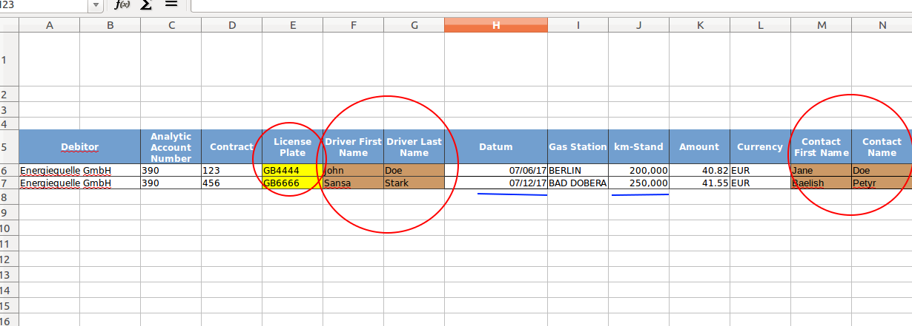

File Data Importer
Import Information As Odoo Records
This module is meant to be used to import a set of information organized in rows (xls/csv format) where
each row contains information about one existing or new record from a specific class of Odoo.
This is not an extension nor an alternative to Odoo's default import system. It simply provides a set of
features to ease the import task without having to modify your raw data so Odoo's import system can
understand it.
Primary keys are defined by the user with the information in the file so records can be retrieved in an
unique way. If the record exists it is updated. If not, it is created.
Also, a single row can contain information about multiple records connected between them.
Therefore, you can import more than one object per row and, for each of them, as many fields as you need.
Example: Import .xls File
This file contains a list of rows representing vehicles and the properties inside the vehicles.
Each red circle represents a different object that is linked to one of the others in the same row.
For example, the first circle is the fleet.vehicle (the car) to be imported, the second circle
is the driver (res.partner) and the third circle is a contact of the driver (res.partner as well).
The blue lines indicate regular attributes (char/number) related to any of the previous objects
(in this case, they are attributes of fleet vehicle).
